<mat-sidenav-container [class]="isNodeSelected ? '': 'authoring-side-nav-wrapper'" fxLayout="column" fxFlexFill>
  <mat-sidenav fxLayout="column" #sidenav opened="true" fixedInViewport="true" ngClass="tree-sidenav-wrapper tree-wrapper"
    fxFlex="calc(100% - 59px)" fxLayoutAlign="start stretch">
    <div fxLayout="column" ngClass="tree-header" fxLayoutGap="10px" fxFlex="115px">
      <div fxLayout="row" fxLayoutAlign="space-between center">
        <h3>{{selectedProject?selectedProject.projectName:''}}</h3>
        <span (click)="closeSideNav()" ngClass="cursor-pointer">
          <i class="mdi mdi-menu mdi-24px"></i>
        </span>
      </div>
      <div fxLayout="row">
        <form fxFlex [formGroup]="distributionsForm" *ngIf="selectedProject.typeOfContent !== documentationType.KnowledgeBase">
          <mat-form-field fxLayout="row" fxLayoutAlign="space-between stretch">
            <mat-select placeholder="Distribution" [formControl]="distribution" (change)="onDistributionChange()" fxFlex>
              <mat-option ngClass="{{distribution.status== entityStatus.Error ?'errorEntity':''}}" *ngFor="let distribution of distributions | sort: 'distributionName'"
                [value]="distribution.distributionId" [disabled]="distribution.status!=entityStatus.Ok">
                {{distribution.distributionName}}
                <mat-spinner *ngIf="distribution.status==entityStatus.Wait||distribution.status==entityStatus.None" style="float:right;"
                  ngClass="tag-view-loader"></mat-spinner>
              </mat-option>
            </mat-select>
          </mat-form-field>
          <mat-progress-bar mode="indeterminate" *ngIf="!distributions"></mat-progress-bar>
        </form>
        <div fxFlex="33px">
          <a [mat-menu-trigger-for]="menu" (click)="$event.stopPropagation()" ngClass="cursor-pointer mt-20" fxFlexOffset="10px" fxLayoutAlign="end">
            <i class="mdi mdi-settings mdi-24px"></i>
          </a>
          <mat-menu #menu="matMenu" [overlapTrigger]="false" xPosition="before" class="arrowtop">
            <button mat-menu-item (click)="importDistribution()">Import Distribution</button>
            <button mat-menu-item (click)="batchMerge()">Batch Merge</button>
          </mat-menu>
        </div>
      </div>
    </div>
    <div fxFlex="calc(100% - 115px)">
      <app-treeview fxFlexFill *ngIf="isDistributionsLoaded" (nodeClick)="sidenav.close()"></app-treeview>
    </div>
  </mat-sidenav>

  <div fxLayout="row" fxLayoutAlign="start stretch" fxFlexFill fxLayoutGap="15px">
    <div fxFlex="3%" fxLayout="column" ngClass="sidenav-toggle">
      <div (click)="sidenav.open()" fxFlexOffset="10px" fxLayoutAlign="center start" ngClass="cursor-pointer">
        <i class="mdi mdi-menu mdi-24px"></i>
      </div>
    </div>
    <div fxFlex="97%" fxFlexFill ngClass="authoring-tabview-wrapper">
      <router-outlet></router-outlet>
    </div>
  </div>
</mat-sidenav-container>
<div ngClass="node-click-arrow" *ngIf="!isNodeSelected">
  
</div>
